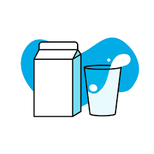
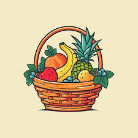

Leite
Comprar

Frutas
Comprar


Plante
Ajude a natureza! Participe da campanha de reflorestamento com mudas nativas da sua região.

Sobre a Feira
A Feira da Conexão é um projeto que valoriza a produção local e incentiva hábitos sustentáveis. Aqui você encontra alimentos frescos direto do produtor, sem intermediários, fortalecendo a economia local e cuidando do meio ambiente.
Área de Compra
Você foi redirecionado para a área de compras. Em breve, essa seção terá integração com um carrinho e formas de pagamento!
Produto selecionado: será mostrado aqui futuramente.